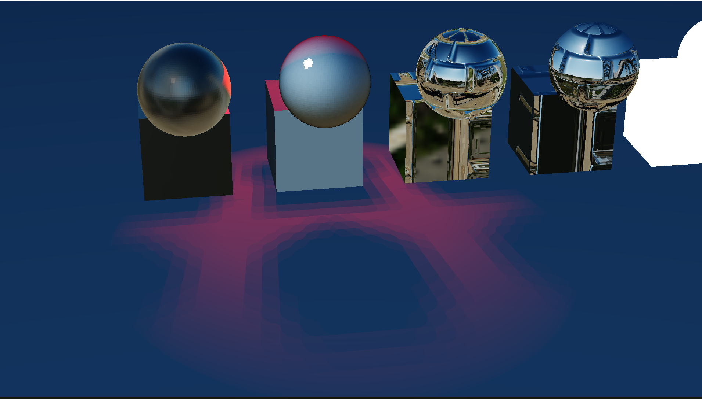
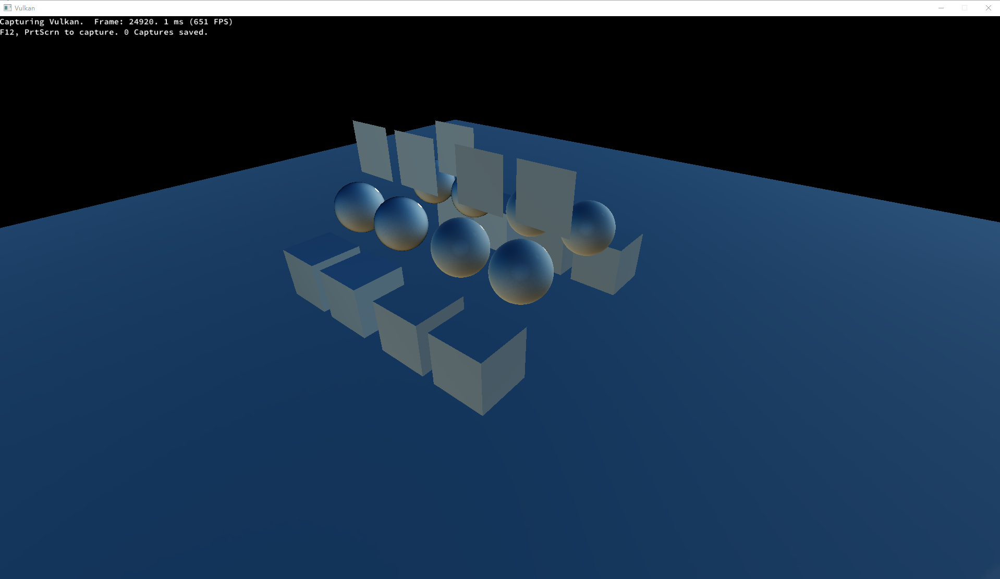
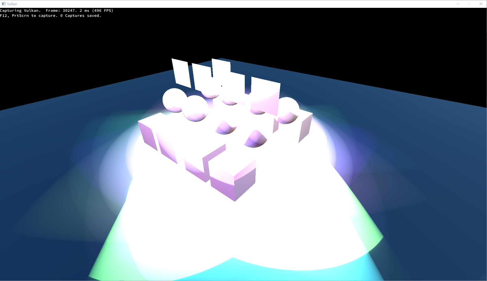

For this assignment, I've added three types of lights from S72 to the renderer: the Sun Light, the Sphere Light, and the Spot Light. Those lights can apply effects on Lambertians and PBR materials. (Does not support Simple material because the material is just pure color). Moreover, for the Spot Light, I've implemented the shadow maps so that the light can have shadows. (The shadow map is also only for Lambertian and PBR) Other than that, I've also implemented the PCSS to try to make the shadow more realistic.
Most of the parts in the scene are from A2, but I added more animations about lights in the beginning. Now you can see how lights and shadow maps work in the renderer. Besides, I've added two spot lights into the scene to show that my renderer supports multiple lights.
Loading the light component from S72 is similar to loading other types. Each light will be stored as an individual light class instance.
The loader does not compute any light data like power or color, they will be processed in the shaders.
I use one light class for all light types because we are only limit to 3 types and there're some common variables for them.
In the light class, it uses a variable called type to identify which type it is: 0 = Sun Light, 1 = Sphere Light, 2 = Spot Light.
The class has all the light data collected from S72, but it also has: pos indicates the light position, dir refers to the light node's facing direction, view refers to the view matrix of the light, and proj which is the projection matrix.
To pass the data into the shader, the renderer will transfer the data into the global uniform buffer.
Since the renderer needs to support multiple lights. It will pass an array of light data into the shader.
However the renderer does not know how many lights will be passed to the shader, so it uses an array with MAX_NUM_LIGHTS = 10.
Note that this number matches with the one in the shader.
Because the light applies to Lambertian and PBR, we only need to modify those two shaders.
The general calculation depends on the light types, so it will first identify which type it is, and compute the Lo separately.
The PBR light implementation is inspired by PBR Lighting with a few modifications.
Screenshots : (Left is Lambertian and right is PBR)
Sun Light:
Sphere Light:
Spot Light:
NOTE: Performance analysis is on the section below.
As mentioned in the previous section, each light has a view matrix and a projection matrix. Those matrices will be used to generate the shadow map.
(Also our shadow map implementation only supports spot lights). Before rendering the scene, the renderer will render the shadow maps through the shadow passes.
Each light will have a shadow pass, and in each pass, it will generate the depth map from the light's view.
Shadow pass on RenderDoc
The result will be stored on the image views linked by the framebuffers, they will later be forwarded to the render pass.
In the render pass, the vertex shader will transform the position to the light space, and the fragment shader will compare its depth with the one sampled on the depth map.
Since again we don't know the number of lights in the scene, it will pass an array of depth map textures with size equals the MAX_NUM_LIGHTS.
To avoid artifacts, I initially tried to use bias but found the result was not optimal as expected. So I switched to changing the culling mode.
In the shadow pass, it will cull all the front faces. This approach does help solve some artifact issues like Peter Panning.
Furthermore, I've also applied PCF to my shadow map implementation as inspired by Shadow Mapping.
It chooses the all samples around the current fragment, so there are 9 samples in total.
Shadow on a Lambertian surface (map size = 32)

Shadow on a Lambertian surface (map size = 256)
Shadow on a PBR surface (map size = 32)
Shadow on a PBR surface (map size = 256)
NOTE: Performance analysis is on the section below.
I've added the PCSS to make the shadow soft for higher objects.
The implementation is inspired by Integrating Realistic Soft Shadows into Your Game Engine.
In Lambertian and PBR's fragment shaders, I firstly find the average distance to the blocker, then I apply the formula to find the penumbra width.
Finally, I add the new filter radius to PCF to find the final result.
PCF shadow on a Lambertian surface (grayscale)
PCF shadow on a Lambertian surface (color)
PCSS shadow on a Lambertian surface (grayscale)
PCSS shadow on a Lambertian surface (color)
Analysis
The shadow images above are from a sphere object on the air.
With PCF, the shadow around the edge is uniformly "blurred".
In contrast, with PCSS, the shadow for the bottom of the sphere is harder, while the shadow for the top is softer.
Note: I'm using a large light radius and near plane which is 2.0 to highlight the contrast; in real curcumstance the parameter will not be that large.
Testing platform:
CPU: AMD Ryzen 1700X
GPU: Nvidia RTX 2080
Memory: 16GB
OS: Windows 10
Vulkan version: 1.3.268.0
Testing tools: RenderDoc
In this section, I want to find out how adding lights could affect the perforamce of rendering the scene. My main focus is on the FPS(Frame per Second) captured by RenderDoc.
I've used a scene with 8 cubes, 8 spheres, and 8 planes. Half of them are in Lambertian material, and the others are in PBR materials.
I put 10 lights into the scene. For each round of test, I turn on each light and see how does the FPS change.
To capture the FPS, I use RenderDoc to capture the frame between 10000 to 100000 and see its FPS at each target point.
Note: The light does not include the ambient environment light.
Scene with all lights off.

Scene with all lights on.

Average of FPS for different number of lights. (Table)
Average of FPS for different number of lights. (Chart)
Analysis:
From the chart above we can found out that although the gap increases when the number of lights is greater than 6,
the overall trend is linear. I think the change maybe due to locality or other optimization issues.
In this section, I try to find out how adding shadow passes and sampling shadow maps could affect the perforamce.
I use the same scene as above, with all 10 lights turned on.
I've splited the test into three groups:
1: Render the scene without any shadow mapping technique.
2: Render the shadow maps through shadow passes but not use them in the render pass.
3: Render the shadow maps and do the shadow calculation in the render pass.
Like the test above, I use RenderDoc to capture FPS at some target time points.
Scene with all lights on and full shadow computations.
Average of FPS for different testing groups. (Table)
Average of FPS for different testing groups. (Chart)
Analysis:
The data above clearly shows that rendering the shadow maps takes a huge amount of time.
Since there are ten lights in the scene, it will have ten shadow passes and render ten shadow maps which is a lot of work.
Thus, when doing a real-time rendering, we should avoid having many passes to create shadow maps but instead just precompute for the static lights.
Moreover, although sampling and calculating the shadow in the render pass also affect the overall performance,
its impact is acceptable compared with rendering the shadow maps.